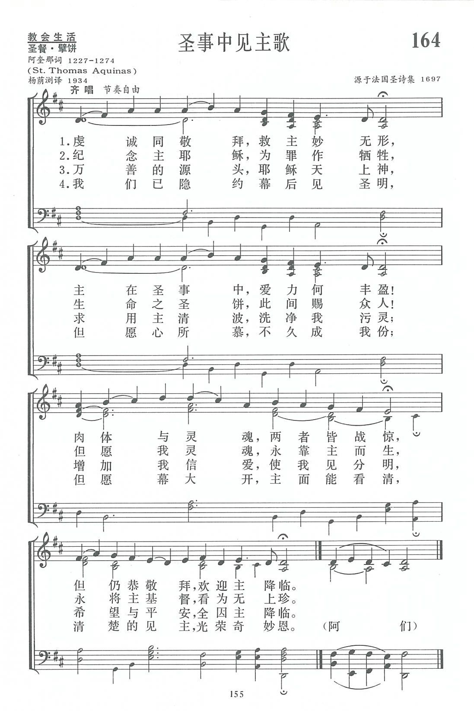
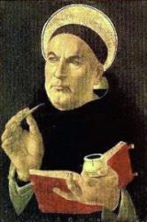
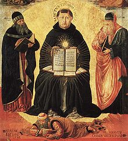
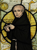
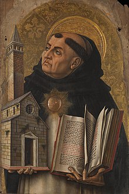

|
|
|
|
1 Thee we adore, O hidden Savior, thee, 2 O blest memorial of our dying Lord, 3 Fountain of goodness, Jesus, Lord and God, 4 O Christ, whom now beneath a veil we see,
|
第164首《聖事中見主歌》 |
|
https://www.zanmeishige.com/tab/13837.html?songbook=1&index=164
 Thee we adore, O hidden Saviour, thee
|
|
|
|
|


https://youtu.be/cuUHaJWrU8Y - Thee we adore, O hidden Saviour, thee
https://youtu.be/2wERi3bvM-Q -
"Thee We Adore, O Hidden Saviour, Thee" is an English translation, made by
James Russell Woodford in 1850, of 'Adoro Te Devote' written by St Thomas
Aquinas in the thirteenth century. The tune is 'Adoro Te Devote', a 13th
century Benedictine plainsong in Mode V.
https://youtu.be/lPOejwNqrl4
| Text: | Thee we adore, O hidden Saviour, thee |
| Author: | St. Thomas Aquinas, 1227 - 74 |
| Translator: | James Russell Woodford, 1820 - 85 |
| Tune: | ADORO TE DEVOTE |
| Short Name: | Thomas Aquinas |
| Full Name: | Thomas, Aquinas, Saint, 1225-1274 |
| Birth Year: | 1225 |
| Death Year: | 1274 |
Thomas of Aquino,

onfessor and doctor, commonly called The Angelical Doctor, “on account of," says Dom Gueranger, "the extraordinary gift of understanding wherewith God had blessed him," was born of noble parents, his father being Landulph, Count of Aquino, and his mother a rich Neapolitan lady, named Theodora. The exact date of his birth is not known, but most trustworthy authorities give it as 1227. At the age of five he was sent to the Benedictine monastery at Monte Cassino to receive his first training, which in the hands of a large-hearted and God-fearing man, resulted in so filling his mind with knowledge and his soul with God, that it is said the monks themselves would often approach by stealth to hear the words of piety and wisdom that fell from the lips of the precocious child when conversing with his companions. After remaining at Monte Cassino for seven years, engaged in study, St. Thomas, "the most saintly of the learned, and the most learned of the saints," returned to his family, in consequence of the sack of the abbey by the Imperial soldiers. From thence he was sent by his parents to the University of Naples then at the height of its prosperity, where, becoming intimate with the Fathers of the Dominican Order, and being struck, probably, by the devotedness and ability of the Dominican Professors in the University, he was induced to petition for admission into that order, though he was at that time not more than seventeen years of age. This step gave such umbrage to his mother that she caused him to be waylaid on the road to Paris (whither he was being hurried to escape from her), and to be kept for more than two years in prison, during which time his brothers, prompted by their mother, used all means, even the most infamous, to seduce him from religion.
At last the Dominicans' influence with the Pope induced the latter to move the Emperor Frederick to order his release, when St. Thomas was at once hurried back to Naples by the delighted members of his order. He was afterwards sent to Rome, then to Paris, and thence to Cologne. At Cologne his studies were continued under the celebrated Albertus Magnus, with whom, in 1245, he was sent by the Dominican Chapter once more to Paris for study, under his direction, at the University. In 1248, when he had completed his three years' curriculum at Paris, St. Thomas was appointed, before he was twenty-three years of age, second professor and “magister studentium,” under Albertus, as regent, at the new Dominican school (on the model of that at Paris), which was established by the Dominicans in that year at Cologne. There he achieved in the schools a great reputation as a teacher, though he by no means confined himself to such work. He preached and wrote; his writings, even at that early age, were remarkable productions and gave promise of the depth and ability which mark his later productions. His sermons also at that time enabled him to attract large congregations into the Dominican church. In 1248 he was directed to take his degree at Paris; and though his modesty and dislike of honour and distinction made the proposal distasteful to him, he set out and begged his way thither; but it was not until October 23rd, 1257, that he took his degree. The interval was filled by such labours in writing, lecturing, and preaching, as to enable him by the time he became a doctor to exercise an influence over the men and ideas of his time which we at this time can scarcely realise. So much was this the case that Louis IX. insisted upon St. Thomas becoming a member of his Council of State, and referred every question that came up for deliberation to him the night before, that he might reflect on it in solitude. At this time he was only thirty-two years of age.
In 1259 he was appointed, by the Dominican Chapter at Valenciennes, a member of a Commission, in company with Albertus Magnus and Pierre de Tarentaise, to establish order and uniformity in all schools of the Dominicans. In 1261 the Pope, Urban IV., immediately upon his election to the Pontifical throne, sent for St. Thomas to aid him in his project for uniting into one the Eastern and Western Churches. St. Thomas in that same year came to Rome, and was at once appointed by the General of his Order to a chair of theology in the Dominican College in that city, where he obtained a like reputation to that which he had secured already at Paris and Cologne. Pope Urban being anxious to reward his services offered him, first the Patriarchate of Jerusalem, and then a Cardinal's hat, but he refused both. After lecturing, at the request of the Pope, with great success at Vitervo, Orvieto, Perugia, and Fondi, he was sent, in 1263, as "Definitor," in the name of the Roman Province, to the Dominican Chapter held in London. Two years later Clement IV., who succeeded Urban as Pope, appointed him, by bull, to the archbishopric of Naples, conferring on him at the same time the revenues of the convent of St. Peter ad Aram. But this appointment he also declined. In 1269 he was summoned to Paris—his last visit— to act as "Definitor" of the Roman Province at the General Chapter of his Order, and he remained there until 1271, when his superiors recalled him to Bologna. In 1272, after visit¬ing Rome on the way, he went to Naples to lecture at the University. His reception in that city was an ovation. All classes came out to welcome him, while the King, Charles I., as a mark of royal favour bestowed on him a pension. He remained at Naples until he was summoned, in 1274, by Pope Gregory X., by special bull, to attend the Second Council of Lyons, but whilst on the journey thither he was called to his rest. His death took place in the Benedictine Abbey of Fossa Nuova in the diocese of Terracina, on the 7th of March 1274, being barely forty-eight years of age.
St. Thomas was a most
voluminous writer, his principal work being the celebrated Summa
Theologiae, which, although never completed, was accepted as such an
authority as to be placed on a table in the council-chamber at the Council
of Trent alongside of the Holy Scriptures and the Decrees of the Popes. But
it is outside the province of this work to enlarge on his prose works.
Though not a prolific writer of hymns, St. Thomas has contributed to the
long list of Latin hymns some which have been in use in the services of the
Church of Rome from his day to this. They are upon the subject of the Lord's
Supper. The best known are:—
Pange lingua gloriosi Corporis Mysterium; Adoro te devote latens Deitas;
Sacris sollemniis juncta sint gaudia; Lauda Sion Salvatorem; and Verbum
supernum prodiens. The 1st, 3rd, and 5th of these are found in the Roman
Breviary, the 2nd, 4th, and 5th in Newman's Hymni
Ecclesiae; the 4th in the Roman Missal; all of
them appear in Daniel; the 2nd and 4th in Mone;
and the 2nd, 4th, and 5th in Königsfeld.
Of these hymns numerous translations have been made from time to time, and
amongst the translators are found Caswall, Neale, Woodford, Morgan, and
others. [Rev. Digby S. Wrangham, M.A.]
-- Excerpts from John Julian, Dictionary of Hymnology (1907)
第164首 圣事中见主歌 Thee we adore，0 hidden Saviour，Thee _St.Thomas Aquinas
经文：“你们每逢吃这饼，喝这杯，是表明主的死，直等到他来”(林前11：26)。
这是中世纪最伟大的神学家和哲学大师多马(托马斯)。阿奎那(St.Thomas Aquinas，1227—1274)所遗留下来的一首名诗。他出生于贵族家庭，当代统治欧洲的帝王侯爵都与他有亲戚关系，德皇腓特烈一世就是他的堂兄弟。但他不羡高官厚禄，毅然进入了修道院，先后毕业于那不勒斯、科伦和巴黎大学。他身躯硕大，沉静寡言，同学们给他一个“哑牛”的外号。但有一天他忽然敏捷流畅地回答老师的哲学问题，老师不由惊叹说：“哑牛不鸣则已，一鸣惊人。”
1248年多马21岁时即受圣职，以后虽有任教会重要职务的机会，他都谦辞婉谢，以教学为他终身工作。他为作多明我会修士，遭到家中反对，在去修道院路上被他兄弟抓住，关了整整一年，但后来他仍去巴黎学习作修士。他学不厌精，诲人不倦，在哲学与神学问题上有独特的见地，往往是言惊四座，博得听众的赞赏，曾任三位教皇的教廷神学教授及法国国王路易九世的顾问。
有一次他陪同教皇登上罗马梵蒂冈圣彼得大教堂的石阶，教皇看到雄伟的圣堂镂阙雕栏、堂皇的陈设、金银装饰，不禁洋洋自得地说：“我们再也不会像使徒彼得那样穷得说：‘金银我都没有’了。”多马回答说：“是的，圣座!然而我们再也不能说：‘我奉拿撒勒人耶稣基督的名叫你起来行走’了。”足见多马的灵性之深邃，见识之过人。
他是经院神学的创建人，著作甚多。其中所著《神学总论》至今仍是天主教的标准神学课本。1263年教皇委任他编订弥撒(圣餐)礼拜仪节，于是他写了几首尊敬圣体的圣诗，《圣事中见主歌》即其中之一。
这首诗所用的调名叫《尊崇(ADORO TE)》，是中世纪的格列高利平咏调(见第7首注①)，或称单旋律圣歌。我国信徒对此熟悉者不多，但若用心学习，不难体会到它的尊严、典雅、深刻。
第三节颂救主宝血洗涤一切罪，诗中“求用主清波，洗净我污灵”可用白话文这样译出：“求主用你最能使人洁净的源泉，洗净我的不洁净。”据英文译者伍德福主教说：他在这一节用“万善之源”代替了拉丁原文中的“敬虔的鹈鹕”。
传说鹈鹕于必要时，会用自己的血喂养它的雏鸟；当时人以它来象征耶稣基督。所以这首名歌，在圣餐的意义上完全合乎圣经的教训和救恩的真理。
Thomas Aquinas 1225 –1274

Thomas Aquinas (/əˈkwaɪnəs/; Italian: Tommaso d'Aquino, lit. 'Thomas of Aquino'; 1225 – 7 March 1274) was an Italian[10][11] Dominican friar and priest, who was an immensely influential philosopher, theologian, and jurist in the tradition of scholasticism; he is also known within the latter as the Doctor Angelicus, the Doctor Communis, and the Doctor Universalis.[a] The name Aquinas identifies his ancestral origins in the county of Aquino in present-day Lazio, Italy. Among other things, he was a prominent proponent of natural theology and the father of a school of thought (encompassing both theology and philosophy) known as Thomism. He argued that God is the source of both the light of natural reason and the light of faith.[12] He has been described as "the most influential thinker of the medieval period"[13] and "the greatest of the *medieval philosopher-theologians.[14] His influence on Western thought is considerable, and much of modern philosophy is derived from his ideas, particularly in the areas of ethics, natural law, metaphysics, and political theory.
Unlike many currents in the Catholic Church of the time,[15] Thomas embraced several ideas put forward by Aristotle — whom he called "the Philosopher" — and attempted to synthesize Aristotelian philosophy with the principles of Christianity.[16]
His best-known works are the Disputed Questions on Truth (1256–1259), the Summa contra Gentiles (1259–1265), and the unfinished but massively influential Summa Theologica, or Summa Theologiae (1265–1274). His commentaries on Scripture and on Aristotle also form an important part of his body of work. Furthermore, Thomas is distinguished for his eucharistic hymns, which form a part of the church's liturgy.[17] The Catholic Church honors Thomas Aquinas as a saint and regards him as the model teacher for those studying for the priesthood, and indeed the highest expression of both natural reason and speculative theology. In modern times, under papal directives, the study of his works was long used as a core of the required program of study for those seeking ordination as priests or deacons, as well as for those in religious formation and for other students of the sacred disciplines (philosophy, Catholic theology, church history, liturgy, and canon law).[18]
A Doctor of the Church, Thomas Aquinas is considered one of the Catholic Church's greatest theologians and philosophers. Pope Benedict XV declared: "This (Dominican) Order ... acquired new luster when the Church declared the teaching of Thomas to be her own and that Doctor, honored with the special praises of the Pontiffs, the master and patron of Catholic schools."[19] [20]
Biography[edit]
Early life (1225–1244)[edit]
Thomas Aquinas was most likely born in the castle of Roccasecca, near Aquino, controlled at that time by the Kingdom of Sicily (in present-day Lazio, Italy), c. 1225,[21] According to some authors,[who?] he was born in the castle of his father, Landulf of Aquino. He was born to the most powerful branch of the family, and Landulf of Aquino was a man of means. As a knight in the service of Emperor Frederick II, Landulf of Aquino held the title miles.[22] Thomas's mother, Theodora, belonged to the Rossi branch of the Neapolitan Caracciolo family.[23] Landulf's brother Sinibald was abbot of Monte Cassino, the oldest Benedictine monastery. While the rest of the family's sons pursued military careers,[24] the family intended for Thomas to follow his uncle into the abbacy;[25] this would have been a normal career path for a younger son of southern Italian nobility.[26]
At the age of five Thomas began his early education at Monte Cassino but after the military conflict between the Emperor Frederick II and Pope Gregory IX spilled into the abbey in early 1239, Landulf and Theodora had Thomas enrolled at the studium generale (university) recently established by Frederick in Naples.[27] There his teacher in arithmetic, geometry, astronomy, and music was Petrus de Ibernia.[28] It was here that Thomas was probably introduced to Aristotle, Averroes and Maimonides, all of whom would influence his theological philosophy.[29] It was also during his study at Naples that Thomas came under the influence of John of St. Julian, a Dominican preacher in Naples, who was part of the active effort by the Dominican order to recruit devout followers.[30]

At the age of nineteen Thomas resolved to join the Dominican Order, which had been founded about 30 years earlier. Thomas's change of heart did not please his family.[31] In an attempt to prevent Theodora's interference in Thomas's choice, the Dominicans arranged to move Thomas to Rome, and from Rome, to Paris.[32] However, while on his journey to Rome, per Theodora's instructions, his brothers seized him as he was drinking from a spring and took him back to his parents at the castle of Monte San Giovanni Campano.[32]
Thomas was held prisoner for almost one year in the family castles at Monte San Giovanni and Roccasecca in an attempt to prevent him from assuming the Dominican habit and to push him into renouncing his new aspiration.[29] Political concerns prevented the Pope from ordering Thomas's release, which had the effect of extending Thomas's detention.[33] Thomas passed this time of trial tutoring his sisters and communicating with members of the Dominican Order.[29]
Family members became desperate to dissuade Thomas, who remained determined to join the Dominicans. At one point, two of his brothers resorted to the measure of hiring a prostitute to seduce him. As included in the official records for his canonization, Thomas drove her away wielding a burning log - with which he inscribed a cross onto the wall - and fell into a mystical ecstasy; two angels appeared to him as he slept and said, "Behold, we gird thee by the command of God with the girdle of chastity, which henceforth will never be imperiled. What human strength can not obtain, is now bestowed upon thee as a celestial gift." From that moment on, Thomas was given the grace of perfect chastity by Christ and he wore the girdle till the end of his life. The girdle was given to the ancient monastery of Vercelli in Piedmont, and is now at Chieri, near Turin.[34][35]

By 1244, seeing that all her attempts to dissuade Thomas had failed, Theodora sought to save the family's dignity, arranging for Thomas to escape at night through his window. In her mind, a secret escape from detention was less damaging than an open surrender to the Dominicans. Thomas was sent first to Naples and then to Rome to meet Johannes von Wildeshausen, the Master General of the Dominican Order.[36]
Paris, Cologne, Albert Magnus, and first Paris regency (1245–1259)[edit]
In 1245 Thomas was sent to study at the Faculty of the Arts at the University of Paris, where he most likely met Dominican scholar Albertus Magnus,[37] then the holder of the Chair of Theology at the College of St. James in Paris.[38] When Albertus was sent by his superiors to teach at the new studium generale at Cologne in 1248,[37] Thomas followed him, declining Pope Innocent IV's offer to appoint him abbot of Monte Cassino as a Dominican.[25] Albertus then appointed the reluctant Thomas magister studentium.[26] Because Thomas was quiet and didn't speak much, some of his fellow students thought he was slow. But Albertus prophetically exclaimed: "You call him the dumb ox, but in his teaching he will one day produce such a bellowing that it will be heard throughout the world."[25]
Thomas taught in Cologne as an apprentice professor (baccalaureus biblicus), instructing students on the books of the Old Testament and writing Expositio super Isaiam ad litteram (Literal Commentary on Isaiah), Postilla super Ieremiam (Commentary on Jeremiah) and Postilla super Threnos (Commentary on Lamentations).[39] Then in 1252 he returned to Paris to study for the master's degree in theology. He lectured on the Bible as an apprentice professor, and upon becoming a baccalaureus Sententiarum (bachelor of the Sentences)[40] he devoted his final three years of study to commenting on Peter Lombard's Sentences. In the first of his four theological syntheses, Thomas composed a massive commentary on the Sentences titled Scriptum super libros Sententiarium (Commentary on the Sentences). Aside from his master's writings, he wrote De ente et essentia (On Being and Essence) for his fellow Dominicans in Paris.[25]
In the spring of 1256 Thomas was appointed regent master in theology at Paris and one of his first works upon assuming this office was Contra impugnantes Dei cultum et religionem (Against Those Who Assail the Worship of God and Religion), defending the mendicant orders, which had come under attack by William of Saint-Amour.[41] During his tenure from 1256 to 1259, Thomas wrote numerous works, including: Questiones disputatae de veritate (Disputed Questions on Truth), a collection of twenty-nine disputed questions on aspects of faith and the human condition[42] prepared for the public university debates he presided over on Lent and Advent;[43] Quaestiones quodlibetales (Quodlibetal Questions), a collection of his responses to questions posed to him by the academic audience;[42] and both Expositio super librum Boethii De trinitate (Commentary on Boethius's De trinitate) and Expositio super librum Boethii De hebdomadibus (Commentary on Boethius's De hebdomadibus), commentaries on the works of 6th-century Roman philosopher Boethius.[44] By the end of his regency, Thomas was working on one of his most famous works, Summa contra Gentiles.[45]
Naples, Orvieto, Rome (1259–1268)[edit]
In 1259 Thomas completed his first regency at the studium generale and left Paris so that others in his order could gain this teaching experience. He returned to Naples where he was appointed as general preacher by the provincial chapter of 29 September 1260. In September 1261 he was called to Orvieto; as conventual lector he was responsible for the pastoral formation of the friars unable to attend a studium generale. In Orvieto Thomas completed his Summa contra Gentiles, wrote the Catena aurea (The Golden Chain),[46] and produced works for Pope Urban IV such as the liturgy for the newly created feast of Corpus Christi and the Contra errores graecorum (Against the Errors of the Greeks).[45] Some of the hymns that Thomas wrote for the feast of Corpus Christi are still sung today, such as the Pange lingua (whose penultimate verse is the famous Tantum ergo), and Panis angelicus. Modern scholarship has confirmed that Thomas was indeed the author of these texts, a point that some had contested.[47]
In February 1265 the newly elected Pope Clement IV summoned Thomas to Rome to serve as papal theologian. This same year he was ordered by the Dominican Chapter of Agnani[48] to teach at the studium conventuale at the Roman convent of Santa Sabina, founded some years before, in 1222.[49] The studium at Santa Sabina now became an experiment for the Dominicans, the Order's first studium provinciale, an intermediate school between the studium conventuale and the studium generale. Prior to this time the Roman Province had offered no specialized education of any sort, no arts, no philosophy; only simple convent schools, with their basic courses in theology for resident friars, were functioning in Tuscany and the meridionale during the first several decades of the order's life. The new studium provinciale at Santa Sabina was to be a more advanced school for the province.[50] Tolomeo da Lucca, an associate and early biographer of Thomas, tells us that at the Santa Sabina studium Thomas taught the full range of philosophical subjects, both moral and natural.[51]
While at the Santa Sabina studium provinciale Thomas began his most famous work, the Summa theologiae,[46] which he conceived specifically suited to beginning students: "Because a doctor of Catholic truth ought not only to teach the proficient, but to him pertains also to instruct beginners. As the Apostle says in 1 Corinthians 3:1–2, as to infants in Christ, I gave you milk to drink, not meat, our proposed intention in this work is to convey those things that pertain to the Christian religion in a way that is fitting to the instruction of beginners."[52] While there he also wrote a variety of other works like his unfinished Compendium Theologiae and Responsio ad fr. Ioannem Vercellensem de articulis 108 sumptis ex opere Petri de Tarentasia (Reply to Brother John of Vercelli Regarding 108 Articles Drawn from the Work of Peter of Tarentaise).[44] In his position as head of the studium Thomas conducted a series of important disputations on the power of God, which he compiled into his De potentia.[53] Nicholas Brunacci [1240–1322] was among Thomas's students at the Santa Sabina studium provinciale and later at the Paris studium generale. In November 1268 he was with Thomas and his associate and secretary Reginald of Piperno, as they left Viterbo on their way to Paris to begin the academic year.[54][55] Another student of Thomas's at the Santa Sabina studium provinciale was Blessed Tommasello da Perugia.[56]
Thomas remained at the studium at Santa Sabina from 1265 until he was called back to Paris in 1268 for a second teaching regency.[53] With his departure for Paris in 1268 and the passage of time the pedagogical activities of the studium provinciale at Santa Sabina were divided between two campuses. A new convent of the Order at the Church of Santa Maria sopra Minerva had a modest beginning in 1255 as a community for women converts, but grew rapidly in size and importance after being given over to the Dominicans friars in 1275.[49] In 1288 the theology component of the provincial curriculum for the education of the friars was relocated from the Santa Sabina studium provinciale to the studium conventuale at Santa Maria sopra Minerva, which was redesignated as a studium particularis theologiae.[57] This studium was transformed in the 16th century into the College of Saint Thomas (Latin: Collegium Divi Thomæ). In the 20th century the college was relocated to the convent of Saints Dominic and Sixtus and was transformed into the Pontifical University of Saint Thomas Aquinas, Angelicum.
Quarrelsome second Paris regency (1269–1272)[edit]

In 1268 the Dominican order assigned Thomas to be regent master at the University of Paris for a second time, a position he held until the spring of 1272. Part of the reason for this sudden reassignment appears to have arisen from the rise of "Averroism" or "radical Aristotelianism" in the universities. In response to these perceived errors, Thomas wrote two works, one of them being De unitate intellectus, contra Averroistas (On the Unity of Intellect, against the Averroists) in which he reprimands Averroism as incompatible with Christian doctrine.[58] During his second regency, he finished the second part of the Summa and wrote De virtutibus and De aeternitate mundi, contra murmurantes (On the Eternity of the World, against Grumblers),[53] the latter of which dealt with controversial Averroist and Aristotelian beginninglessness of the world.[59]
Disputes with some important Franciscans conspired to make his second regency much more difficult and troubled than the first. A year before Thomas re-assumed the regency at the 1266–67 Paris disputations, Franciscan master William of Baglione accused Thomas of encouraging Averroists, most likely counting him as one of the "blind leaders of the blind". Eleonore Stump says, "It has also been persuasively argued that Thomas Aquinas's De aeternitate mundi was directed in particular against his Franciscan colleague in theology, John Pecham."[59]
In reality, Thomas was deeply disturbed by the spread of Averroism and was angered when he discovered Siger of Brabant teaching Averroistic interpretations of Aristotle to Parisian students.[60] On 10 December 1270, the Bishop of Paris, Étienne Tempier, issued an edict condemning thirteen Aristotelian and Averroistic propositions as heretical and excommunicating anyone who continued to support them.[61] Many in the ecclesiastical community, the so-called Augustinians, were fearful that this introduction of Aristotelianism and the more extreme Averroism might somehow contaminate the purity of the Christian faith. In what appears to be an attempt to counteract the growing fear of Aristotelian thought, Thomas conducted a series of disputations between 1270 and 1272: De virtutibus in communi (On Virtues in General), De virtutibus cardinalibus (On Cardinal Virtues), De spe (On Hope).[62]
Late career and cessation of writing (1272–1274)[edit]
_-_stained_glass,_St._Thomas_Aquinas,_detail.jpg)
In 1272 Thomas took leave from the University of Paris when the Dominicans from his home province called upon him to establish a studium generale wherever he liked and staff it as he pleased. He chose to establish the institution in Naples, and moved there to take his post as regent master.[53] He took his time at Naples to work on the third part of the Summa while giving lectures on various religious topics. He also preached to the people of Naples every day in Lent, 1273. These sermons on the Commandments, the Creed, the Our Father, and Hail Mary were very popular.[63]
Thomas has been traditionally ascribed with the ability to levitate. For example, G. K. Chesterton wrote that "His experiences included well-attested cases of levitation in ecstasy; and the Blessed Virgin appeared to him, comforting him with the welcome news that he would never be a Bishop."[64][better source needed]
It is traditionally held that on one occasion, in 1273 at the Dominican convent of Naples in the chapel of Saint Nicholas,[65] after Matins, Thomas lingered and was seen by the sacristan Domenic of Caserta to be levitating in prayer with tears before an icon of the crucified Christ. Christ said to Thomas, "You have written well of me, Thomas. What reward would you have for your labor?" Thomas responded, "Nothing but you, Lord."[66][67]
On 6 December 1273, another mystical experience took place. While he was celebrating Mass, he experienced an unusually long ecstasy.[67] Because of what he saw, he abandoned his routine and refused to dictate to his socius Reginald of Piperno. When Reginald begged him to get back to work, Thomas replied: "Reginald, I cannot, because all that I have written seems like straw to me"[68] (mihi videtur ut palea).[69] As a result, the Summa Theologica would remain uncompleted.[70] What exactly triggered Thomas's change in behavior is believed by some to have been some kind of supernatural experience of God.[71] After taking to his bed, he did recover some strength.[72]
In 1054, the Great Schism had occurred between the Catholic Church in the West, and the Eastern Orthodox Church. Looking to find a way to reunite the two, Pope Gregory X convened the Second Council of Lyon to be held on 1 May 1274 and summoned Thomas to attend.[73] At the meeting, Thomas's work for Pope Urban IV concerning the Greeks, Contra errores graecorum, was to be presented.[74]
On his way to the council, riding on a donkey along the Appian Way,[73] he struck his head on the branch of a fallen tree and became seriously ill again. He was then quickly escorted to Monte Cassino to convalesce.[72] After resting for a while, he set out again, but stopped at the Cistercian Fossanova Abbey after again falling ill.[75] The monks nursed him for several days,[76] and as he received his last rites he prayed: "I have written and taught much about this very holy Body, and about the other sacraments in the faith of Christ, and about the Holy Roman Church, to whose correction I expose and submit everything I have written."[77] He died on 7 March 1274[75] while giving commentary on the Song of Songs.[78]
Condemnation of 1277[edit]
In 1277 Étienne Tempier, the same bishop of Paris who had issued the condemnation of 1270, issued another more extensive condemnation. One aim of this condemnation was to clarify that God's absolute power transcended any principles of logic that Aristotle or Averroes might place on it.[79] More specifically, it contained a list of 219 propositions that the bishop had determined to violate the omnipotence of God, and included in this list were twenty Thomistic propositions. Their inclusion badly damaged Thomas's reputation for many years.[80]
In the Divine Comedy, Dante sees the glorified soul of Thomas in the Heaven of the Sun with the other great exemplars of religious wisdom.[81] Dante asserts that Thomas died by poisoning, on the order of Charles of Anjou;[82] Villani cites this belief,[83] and the Anonimo Fiorentino describes the crime and its motive. But the historian Ludovico Antonio Muratori reproduces the account made by one of Thomas's friends, and this version of the story gives no hint of foul play.[84]
Thomas's theology had begun its rise to prestige. Two centuries later, in 1567, Pope Pius V proclaimed St. Thomas Aquinas a Doctor of the Church and ranked his feast with those of the four great Latin fathers: Ambrose, Augustine of Hippo, Jerome and Gregory.[84] At the Council of Trent, Thomas had the honor of having his Summa theologiae placed on the altar alongside the Bible and the Decretals.[80][85]
In his encyclical of 4 August 1879, Aeterni Patris, Pope Leo XIII stated that Thomas Aquinas's theology was a definitive exposition of Catholic doctrine. Thus, he directed the clergy to take the teachings of Thomas as the basis of their theological positions. Leo XIII also decreed that all Catholic seminaries and universities must teach Thomas's doctrines, and where Thomas did not speak on a topic, the teachers were "urged to teach conclusions that were reconcilable with his thinking." In 1880, Saint Thomas Aquinas was declared patron of all Catholic educational establishments.[84]
Canonization[edit]

When the devil's advocate at his canonization process objected that there were no miracles, one of the cardinals answered, "Tot miraculis, quot articulis"—"there are as many miracles (in his life) as articles (in his Summa)".[85] Fifty years after Thomas's death, on 18 July 1323, Pope John XXII, seated in Avignon, pronounced Thomas a saint.[86]
A monastery at Naples, near Naples Cathedral, shows a cell in which he supposedly lived.[84] His remains were translated from Fossanova to the Church of the Jacobins in Toulouse on 28 January 1369. Between 1789 and 1974, they were held in the Basilique de Saint-Sernin, Toulouse. In 1974, they were returned to the Church of the Jacobins, where they have remained ever since.
When he was canonized, his feast day was inserted in the General Roman Calendar for celebration on 7 March, the day of his death. Since this date commonly falls within Lent, the 1969 revision of the calendar moved his memorial to 28 January, the date of the translation of his relics to Church of the Jacobins, Toulouse.[87][88]
Thomas Aquinas is honored with a feast day in some churches of the Anglican Communion with a Lesser Festival on 28 January.[89]
Philosophy[edit]
|
|
| Part of a series on |
| Thomas Aquinas |
|---|
|
 |

Thomas Aquinas was a theologian and a Scholastic philosopher.[90] However, he never considered himself a philosopher, and criticized philosophers, whom he saw as pagans, for always "falling short of the true and proper wisdom to be found in Christian revelation."[91] With this in mind, Thomas did have respect for Aristotle, so much so that in the Summa, he often cites Aristotle simply as "the Philosopher", a designation frequently used at that time. However, Thomas "never compromised Christian doctrine by bringing it into line with current Aristotelianism; rather, he modified and corrected the latter whenever it clashed with Christian belief."[92]
Much of Thomas's work bears upon philosophical topics, and in this sense may be characterized as philosophical. His philosophical thought has exerted enormous influence on subsequent Christian theology, especially that of the Catholic Church, extending to Western philosophy in general.
Commentaries on Aristotle[edit]
Thomas Aquinas wrote several important commentaries on Aristotle's works, including On the Soul, On Interpretation, Nicomachean Ethics and Metaphysics. His work is associated with William of Moerbeke's translations of Aristotle from Greek into Latin.
Epistemology (Theory of knowledge)[edit]
Thomas Aquinas believed "that for the knowledge of any truth whatsoever man needs divine help, that the intellect may be moved by God to its act."[93] However, he believed that human beings have the natural capacity to know many things without special divine revelation, even though such revelation occurs from time to time, "especially in regard to such (truths) as pertain to faith."[94] But this is the light that is given to man by God according to man's nature: "Now every form bestowed on created things by God has power for a determined act[uality], which it can bring about in proportion to its own proper endowment; and beyond which it is powerless, except by a superadded form, as water can only heat when heated by the fire. And thus the human understanding has a form, viz. intelligible light, which of itself is sufficient for knowing certain intelligible things, viz. those we can come to know through the senses."[94]
Ethics[edit]
Thomas's ethics are based on the concept of "first principles of action".[95] In his Summa theologiae, he wrote:
Thomas emphasized that "Synderesis is said to be the law of our mind, because it is a habit containing the precepts of the natural law, which are the first principles of human actions."[97][98]
According to Thomas "... all acts of virtue are prescribed by the natural law: since each one's reason naturally dictates to him to act virtuously. But if we speak of virtuous acts, considered in themselves, i.e., in their proper species, thus not all virtuous acts are prescribed by the natural law: for many things are done virtuously, to which nature does not incline at first; but that, through the inquiry of reason, have been found by men to be conducive to well living." Therefore, we must determine if we are speaking of virtuous acts as under the aspect of virtuous or as an act in its species.[99]
Thomas defined the four cardinal virtues as prudence, temperance, justice, and fortitude. The cardinal virtues are natural and revealed in nature, and they are binding on everyone. There are, however, three theological virtues: faith, hope, and charity. Thomas also describes the virtues as imperfect (incomplete) and perfect (complete) virtues. A perfect virtue is any virtue with charity, charity completes a cardinal virtue. A non-Christian can display courage, but it would be courage with temperance. A Christian would display courage with charity. These are somewhat supernatural and are distinct from other virtues in their object, namely, God:
Thomas Aquinas wrote "[Greed] is a sin against God, just as all mortal sins, in as much as man condemns things eternal for the sake of temporal things."[101]
Furthermore, in his Treatise on Law, Thomas distinguished four kinds of law: eternal, natural, human, and divine. Eternal law is the decree of God that governs all creation: "That Law which is the Supreme Reason cannot be understood to be otherwise than unchangeable and eternal."[102] Natural law is the human "participation" in the eternal law and is discovered by reason.[103] Natural law is based on "first principles":
Whether the natural law contains several precepts, or one only is explained by Thomas, "All the inclinations of any parts whatsoever of human nature, e.g., of the concupiscible and irascible parts, in so far as they are ruled by reason, belong to the natural law, and are reduced to one first precept, as stated above: so that the precepts of the natural law are many in themselves, but are based on one common foundation."[105]

The desires to live and to procreate are counted by Thomas among those basic (natural) human values on which all human values are based. According to Thomas, all human tendencies are geared towards real human goods. In this case, the human nature in question is marriage, the total gift of oneself to another that ensures a family for children and a future for mankind.[106] He defined the dual inclination of the action of love: "towards the good which a man wishes to someone (to himself or to another) and towards that to which he wishes some good".[107]
Concerning the Human Law, Thomas concludes, "... that just as, in the speculative reason, from naturally known indemonstrable principles, we draw the conclusions of the various sciences, the knowledge of which is not imparted to us by nature, but acquired by the efforts of reason, so to it is from the precepts of the natural law, as from general and indemonstrable principles, that human reason needs to proceed to the more particular determination of certain matters. These particular determinations, devised by human reason, are called human laws, provided the other essential conditions of law be observed ..." Human law is positive law: the natural law applied by governments to societies.[99]
Natural and human law is not adequate alone. The need for human behavior to be directed made it necessary to have Divine law. Divine law is the specially revealed law in the scriptures. Thomas quotes, "The Apostle says (Hebrews 7.12): The priesthood being translated, it is necessary that a translation also be made of the law. But the priesthood is twofold, as stated in the same passage, viz, the levitical priesthood, and the priesthood of Christ. Therefore the Divine law is twofold, namely, the Old Law and the New Law."[108]
Thomas also greatly influenced Catholic understandings of mortal and venial sins.
Thomas Aquinas refers to animals as dumb and that the natural order has declared animals for man's use. Thomas denied that human beings have any duty of charity to animals because they are not persons. Otherwise, it would be unlawful to kill them for food. But humans should still be charitable to them, for "cruel habits might carry over into our treatment of human beings."[109][110]
Thomas contributed to economic thought as an aspect of ethics and justice. He dealt with the concept of a just price, normally its market price or a regulated price sufficient to cover seller costs of production. He argued it was immoral for sellers to raise their prices simply because buyers were in pressing need for a product.[111][112]
Political order[edit]
Thomas's theory of political order became highly influential. He sees man as a social being that lives in a community and interacts with its other members. That leads, among other things, to the division of labour.
Thomas made a distinction between a good man and a good citizen, which was important to the development of libertarian theory. That is, the sphere of individual autonomy was one which the state could not interfere with.[113]
Thomas thinks that monarchy is the best form of government, because a monarch does not have to form compromises with other persons. Aquinas, however, held that monarchy in only a very specific sense was the best form of government––only when the king was virtuous is it the best form; otherwise if the monarch is vicious it is the worst kind (see De Regno I, Ch. 2). Moreover, according to Thomas, oligarchy degenerates more easily into tyranny than monarchy. To prevent a king from becoming a tyrant, his political powers must be curbed. Unless an agreement of all persons involved can be reached, a tyrant must be tolerated, as otherwise the political situation could deteriorate into anarchy, which would be even worse than tyranny. In his political work De Regno, Aquinas subordinated the political power of king to the primate of the divine and human law of God the creator. For example, he affirmed:
According to Thomas, monarchs are God's representatives in their territories, but the church, represented by the popes, is above the kings in matters of doctrine and ethics. As a consequence, worldly rulers are obliged to adapt their laws to the Catholic Church's doctrines and determinations.
Thomas said slavery was not the natural state of man.[114] He also held that a slave is by nature equal to his master (Summa Theologiae Supplement, Q52, A2, ad 1). He distinguished between 'natural slavery', which is for the benefit of both master and slave, and 'servile slavery', which removes all autonomy from the slave and is, according to Thomas, worse than death.[115] Aquinas' doctrines of the Fair Price,[116] of the right of tyrannicide and of the equality of all the baptized sons of God in the Communion of saints established a limit to the political power to prevent it from degenerating into tyranny. This system had a concern in the Protestant opposition to the Roman Catholic Church and in "disinterested" replies to Thomism carried out by Kant and by Spinoza.
Psychology[edit]
|
|
hideThis section has multiple issues. Please
help improve
it or discuss these issues on
the talk
page. (Learn
how and when to remove these template messages)
|
Thomas Aquinas maintains that a human is a single material substance. He understands the soul as the form of the body, which makes a human being the composite of the two. Thus, only living, form-matter composites can truly be called human; dead bodies are "human" only analogously. One actually existing substance comes from body and soul. A human is a single material substance, but still should be understood as having an immaterial soul, which continues after bodily death.
In his Summa theologiae Thomas clearly states his position on the nature of the soul; defining it as "the first principle of life".[117] The soul is not corporeal, or a body; it is the act of a body. Because the intellect is incorporeal, it does not use the bodily organs, as "the operation of anything follows the mode of its being."[118]

According to Thomas the soul is not matter, not even incorporeal or spiritual matter. If it were, it would not be able to understand universals, which are immaterial. A receiver receives things according to the receiver's own nature, so for soul (receiver) to understand (receive) universals, it must have the same nature as universals. Yet, any substance that understands universals may not be a matter-form composite. So, humans have rational souls, which are abstract forms independent of the body. But a human being is one existing, single material substance that comes from body and soul: that is what Thomas means when he writes that "something one in nature can be formed from an intellectual substance and a body", and "a thing one in nature does not result from two permanent entities unless one has the character of substantial form and the other of matter."[119]
Economics[edit]
Thomas Aquinas addressed most economic questions within the framework of justice, which he contended was the highest of the moral virtues.[120] He says that justice is "a habit whereby man renders to each his due by a constant and perpetual will."[121] He argued that this concept of justice has its roots in natural law. Joseph Schumpeter, in his History of Economic Analysis, concluded that "All the economic questions put together matters less to him than did the smallest point of theological or philosophical doctrine, and it is only where economic phenomena raise questions of moral theology that he touches upon them at all."[122]
Thomas Aquinas was careful to distinguish the just, or natural, price of a good from that price which manipulates another party. He determines the just price from a number of things. First, the just price must be relative to the worth of the good. Thomas held that the price of a good measures its quality: "the quality of a thing that comes into human use is measured by the price given for it."[123] He goes on to say that the price of a good, measured by its worth, is determined by its usefulness to man. This worth is subjective because each good has a different level of usefulness to every man. Thomas argued, then, that the price should reflect the current value of a good according to its usefulness to man. He continues: "Gold and silver are costly not only on account of the usefulness of the vessels and other like things made from them, but also on account of the excellence and purity of their substance."[124]
Thomas Aquinas also wrote extensively on usury, that is, the lending of money with interest. He condemned its practice: "to take usury for money lent is unjust in itself, because this is to sell what does not exist, and this evidently leads to inequality which is contrary to justice."[125] Money, and other similar goods, are consumed only when they are used. Charging a premium for money lent is a charge for more than the use of the good. Thus, Thomas Aquinas concluded that the lender is charging for something not his own, in other words, not rendering to each his due.
Theology[edit]
|
|
| Part of a series on |
| Catholic philosophy |
|---|
   |
| Ethics |
| Metaphysics |
| Schools |
| Philosophers |
| Philosophy portal |
Thomas Aquinas viewed theology, or the sacred doctrine, as a science,[71] the raw material data of which consists of written scripture and the tradition of the Catholic Church. These sources of data were produced by the self-revelation of God to individuals and groups of people throughout history. Faith and reason, while distinct but related, are the two primary tools for processing the data of theology. Thomas believed both were necessary—or, rather, that the confluence of both was necessary—for one to obtain true knowledge of God. Thomas blended Greek philosophy and Christian doctrine by suggesting that rational thinking and the study of nature, like revelation, were valid ways to understand truths pertaining to God. According to Thomas, God reveals himself through nature, so to study nature is to study God. The ultimate goals of theology, in Thomas's mind, are to use reason to grasp the truth about God and to experience salvation through that truth. The central thought is "gratia non tollit naturam, sed perficit" ('grace does not destroy nature, but perfects it').
Revelation[edit]
Thomas believed that truth is known through reason, rationality (natural revelation) and faith (supernatural revelation). Supernatural revelation has its origin in the inspiration of the Holy Spirit and is made available through the teaching of the prophets, summed up in Holy Scripture, and transmitted by the Magisterium, the sum of which is called "Tradition". Natural revelation is the truth available to all people through their human nature and powers of reason. For example, he felt this applied to rational ways to know the existence of God.
Though one may deduce the existence of God and his Attributes (Unity, Truth, Goodness, Power, Knowledge) through reason, certain specifics may be known only through the special revelation of God through Jesus Christ. The major theological components of Christianity, such as the Trinity, the Incarnation, and charity are revealed in the teachings of the church and the scriptures and may not otherwise be deduced.[126]
Preserving nature within grace[edit]
Revealed knowledge does not negate the truth and the completeness of human science as human, it further establishes them. First, it grants that the same things can be treated from two different perspectives without one canceling the other; thus there can be two sciences of God. Second, it provides the basis for the two sciences: one functions through the power of the light of natural reason, the other through the light of divine revelation. Moreover, they can, at least to some extent, keep out of each other's way because they differ "according to genus". Sacred doctrine is a fundamentally different kind of thing from theology, which is part of philosophy (ST I. 1.1 ad 2).
Faith and reason complement rather than contradict each other, each giving different views of the same truth.
Creation[edit]

As a Catholic Thomas believed that God is the "maker of heaven and earth, of all that is visible and invisible." Like Aristotle, Thomas posited that life could form from non-living material or plant life, a theory of ongoing abiogenesis known as spontaneous generation:

Additionally Thomas considered Empedocles's theory that various mutated species emerged at the dawn of Creation. Thomas reasoned that these species were generated through mutations in animal sperm, and argued that they were not unintended by nature; rather, such species were simply not intended for perpetual existence. That discussion is found in his commentary on Aristotle's Physics:
Just war[edit]
While it would be contradictory to speak of a "just schism", a "just brawling" or a "just sedition", the word "war" permits sub-classification into good and bad kinds. Thomas Aquinas, centuries after Augustine of Hippo, used the authority of Augustine's arguments in an attempt to define the conditions under which a war could be just.[129] He laid these out in his historic work, Summa Theologica:
- First, war must occur for a good and just purpose rather than the pursuit of wealth or power.
- Second, just war must be waged by a properly instituted authority such as the state.
- Third, peace must be a central motive even in the midst of violence.[130]
School of Salamanca[edit]
Some 200 years later, the School of Salamanca expanded Thomas's understanding of natural law and just war. Given that war is one of the worst evils suffered by mankind, the adherents of the School reasoned that it ought to be resorted to only when it was necessary to prevent an even greater evil. A diplomatic agreement is preferable, even for the more powerful party, before a war is started. Examples of "just war" are:[citation needed]
- In self-defense, as long as there is a reasonable possibility of success. If failure is a foregone conclusion, then it is just a wasteful spilling of blood.
- Preventive war against a tyrant who is about to attack.
- War to punish a guilty enemy.
A war is not legitimate or illegitimate simply based on its original motivation: it must comply with a series of additional requirements:[citation needed]
- The response must be commensurate with the evil; more violence than is strictly necessary would be unjust.
- Governing authorities declare war, but their decision is not sufficient cause to begin a war. If the people oppose a war, then it is illegitimate. The people have a right to depose a government that is waging, or is about to wage, an unjust war.
- Once war has begun, there remain moral limits to action. For example, one may not attack innocents or kill hostages.
- The belligerents must exhaust all options for dialogue and negotiation before undertaking a war; war is legitimate only as a last resort.
Under this doctrine, expansionist wars, wars of pillage, wars to convert infidels or pagans, and wars for glory are all inherently unjust.
Nature of God[edit]
Thomas believed that the existence of God is self-evident in itself, but not to us. "Therefore I say that this proposition, "God exists", of itself is self-evident, for the predicate is the same as the subject ... Now because we do not know the essence of God, the proposition is not self-evident to us; but needs to be demonstrated by things that are more known to us, though less known in their nature—namely, by effects."[131]
Thomas believed that the existence of God can be demonstrated. Briefly in the Summa theologiae and more extensively in the Summa contra Gentiles, he considered in great detail five arguments for the existence of God, widely known as the quinque viae (Five Ways).
- Motion: Some things undoubtedly move, though cannot cause their own motion. Since, as Thomas believed, there can be no infinite chain of causes of motion, there must be a First Mover not moved by anything else, and this is what everyone understands by God.
- Causation: As in the case of motion, nothing can cause itself, and an infinite chain of causation is impossible, so there must be a First Cause, called God.
- Existence of necessary and the unnecessary: Our experience includes things certainly existing but apparently unnecessary. Not everything can be unnecessary, for then once there was nothing and there would still be nothing. Therefore, we are compelled to suppose something that exists necessarily, having this necessity only from itself; in fact itself the cause for other things to exist.
- Gradation: If we can notice a gradation in things in the sense that some things are more hot, good, etc., there must be a superlative that is the truest and noblest thing, and so most fully existing. This then, we call God.
- Ordered tendencies of nature: A direction of actions to an end is noticed in all bodies following natural laws. Anything without awareness tends to a goal under the guidance of one who is aware. This we call God.[132]
Aquinas was receptive to and influenced by Avicenna's Proof of the Truthful.[133] Concerning the nature of God, Thomas, like Avicenna felt the best approach, commonly called the via negativa, is to consider what God is not. This led him to propose five statements about the divine qualities:
- God is simple, without composition of parts, such as body and soul, or matter and form.[134]
- God is perfect, lacking nothing. That is, God is distinguished from other beings on account of God's complete actuality.[135] Thomas defined God as the 'Ipse Actus Essendi subsistens,' subsisting act of being.[136]
- God is infinite. That is, God is not finite in the ways that created beings are physically, intellectually, and emotionally limited. This infinity is to be distinguished from infinity of size and infinity of number.[137]
- God is immutable, incapable of change on the levels of God's essence and character.[138]
- God is one, without diversification within God's self. The unity of God is such that God's essence is the same as God's existence. In Thomas's words, "in itself the proposition 'God exists' is necessarily true, for in it subject and predicate are the same."[139]
Nature of Sin[edit]
Following St. Augustine of Hippo, Thomas defines sin as "a word, deed, or desire, contrary to the eternal law."[140] It is important to note the analogous nature of law in Thomas's legal philosophy. Natural law is an instance or instantiation of eternal law. Because natural law is what human beings determine according to their own nature (as rational beings), disobeying reason is disobeying natural law and eternal law. Thus eternal law is logically prior to reception of either "natural law" (that determined by reason) or "divine law" (that found in the Old and New Testaments). In other words, God's will extends to both reason and revelation. Sin is abrogating either one's own reason, on the one hand, or revelation on the other, and is synonymous with "evil" (privation of good, or privatio boni[141]). Thomas, like all Scholastics, generally argued that the findings of reason and data of revelation cannot conflict, so both are a guide to God's will for human beings.
Nature of the Trinity[edit]
Thomas argued that God, while perfectly united, also is perfectly described by Three Interrelated Persons. These three persons (Father, Son, and Holy Spirit) are constituted by their relations within the essence of God. Thomas wrote that the term "Trinity" "does not mean the relations themselves of the Persons, but rather the number of persons related to each other; and hence it is that the word in itself does not express regard to another."[142] The Father generates the Son (or the Word) by the relation of self-awareness. This eternal generation then produces an eternal Spirit "who enjoys the divine nature as the Love of God, the Love of the Father for the Word."
This Trinity exists independently from the world. It transcends the created world, but the Trinity also decided to give grace to human beings. This takes place through the Incarnation of the Word in the person of Jesus Christ and through the indwelling of the Holy Spirit within those who have experienced salvation by God; according to Aidan Nichols.[143]
Prima causa (first cause)[edit]
Thomas's five proofs for the existence of God take some of Aristotle's assertions concerning principles of being. For God as prima causa ("first cause") comes from Aristotle's concept of the unmoved mover and asserts that God is the ultimate cause of all things.[144]
Nature of Jesus Christ[edit]
In the Summa Theologica Thomas begins his discussion of Jesus Christ by recounting the biblical story of Adam and Eve and by describing the negative effects of original sin. The purpose of Christ's Incarnation was to restore human nature by removing the contamination of sin, which humans cannot do by themselves. "Divine Wisdom judged it fitting that God should become man, so that thus one and the same person would be able both to restore man and to offer satisfaction."[145] Thomas argued in favor of the satisfaction view of atonement; that is, that Jesus Christ died "to satisfy for the whole human race, which was sentenced to die on account of sin."[146]

Thomas argued against several specific contemporary and historical theologians who held differing views about Christ. In response to Photinus, Thomas stated that Jesus was truly divine and not simply a human being. Against Nestorius, who suggested that Son of God was merely conjoined to the man Christ, Thomas argued that the fullness of God was an integral part of Christ's existence. However, countering Apollinaris' views, Thomas held that Christ had a truly human (rational) soul, as well. This produced a duality of natures in Christ. Thomas argued against Eutyches that this duality persisted after the Incarnation. Thomas stated that these two natures existed simultaneously yet distinguishably in one real human body, unlike the teachings of Manichaeus and Valentinus.[147]
With respect to Paul's assertion that Christ, "though he was in the form of God ... emptied himself" (Philippians 2:6–7) in becoming human, Thomas offered an articulation of divine kenosis that has informed much subsequent Catholic Christology. Following the Council of Nicaea, Augustine of Hippo, as well as the assertions of Scripture, Thomas held the doctrine of divine immutability.[148][149][150] Hence, in becoming human, there could be no change in the divine person of Christ. For Thomas, "the mystery of Incarnation was not completed through God being changed in any way from the state in which He had been from eternity, but through His having united Himself to the creature in a new way, or rather through having united it to Himself."[151] Similarly, Thomas explained that Christ "emptied Himself, not by putting off His divine nature, but by assuming a human nature."[152] For Thomas, "the divine nature is sufficiently full, because every perfection of goodness is there. But human nature and the soul are not full, but capable of fulness, because it was made as a slate not written upon. Therefore, human nature is empty."[152] Thus, when Paul indicates that Christ "emptied himself" this is to be understood in light of his assumption of a human nature.
In short "Christ had a real body of the same nature of ours, a true rational soul, and, together with these, perfect Deity". Thus, there is both unity (in his one hypostasis) and composition (in his two natures, human and Divine) in Christ.[153]
Echoing Athanasius of Alexandria, he said that "The only begotten Son of God ... assumed our nature, so that he, made man, might make men gods."[155]
Goal of human life[edit]

Thomas Aquinas identified the goal of human existence as union and eternal fellowship with God. This goal is achieved through the beatific vision, in which a person experiences perfect, unending happiness by seeing the essence of God. The vision occurs after death as a gift from God to those who in life experienced salvation and redemption through Christ.
The goal of union with God has implications for the individual's life on earth. Thomas stated that an individual's will must be ordered toward right things, such as charity, peace, and holiness. He saw this orientation as also the way to happiness. Indeed, Thomas ordered his treatment of the moral life around the idea of happiness. The relationship between will and goal is antecedent in nature "because rectitude of the will consists in being duly ordered to the last end [that is, the beatific vision]." Those who truly seek to understand and see God will necessarily love what God loves. Such love requires morality and bears fruit in everyday human choices.[156]
Treatment of heretics[edit]
Thomas Aquinas belonged to the Dominican Order (formally Ordo Praedicatorum, the Order of Preachers) who began as an order dedicated to the conversion of the Albigensians and other heterodox factions, at first by peaceful means; later the Albigensians were dealt with by means of the Albigensian Crusade. In the Summa theologiae, he wrote:
Heresy was a capital offense against the secular law of most European countries of the 13th century. Kings and emperors, even those at war with the papacy, listed heresy first among the crimes against the state. Kings claimed power from God according to the Christian faith. Often enough, especially in that age of papal claims to universal worldly power, the rulers' power was tangibly and visibly legitimated directly through coronation by the pope.
Simple theft, forgery, fraud, and other such crimes were also capital offenses; Thomas's point seems to be that the gravity of this offense, which touches not only the material goods but also the spiritual goods of others, is at least the same as forgery. Thomas's suggestion specifically demands that heretics be handed to a "secular tribunal" rather than magisterial authority. That Thomas specifically says that heretics "deserve ... death" is related to his theology, according to which all sinners have no intrinsic right to life ("For the wages of sin is death; but the free gift of God is eternal life in Christ Jesus our Lord"[Romans 6:23]). Although the life of a heretic who repents should be spared, the former heretic should be executed if he relapses into heresy. Thomas elaborates on his opinion regarding heresy in the next article, when he says:
For Jews, Thomas argues for toleration of both their persons and their religious rites.[159]
Magic and its practitioners[edit]
Regarding magic, Aquinas wrote that:
- only God can perform miracles, create and transform.[160]
- angels and demons ("spiritual substances") may do wonderful things, but they are not miracles and merely use natural things as instruments.[161]
- any efficacy of magicians does not come from the power of particular words, or celestial bodies, or special figures, or sympathetic magic, but by bidding (ibid., 105)
- "demons" are intellective substances who were created good and have chosen to be bad, it is these who are bid.[162]
- if there is some transformation that could not occur in nature it is either the demon working on human imagination or arranging a fake.[163]
A mention of witchcraft appears in the Summa theologicae[164] and concludes that the church does not treat temporary or permanent impotence attributed to a spell any differently to that of natural causes, as far as an impediment to marriage.
Under the canon Episcopi, church doctrine held that witchcraft was not possible and any practitioners of sorcery were deluded and their acts an illusion. Thomas Aquinas was instrumental in developing a new doctrine that included the belief in the real power of witches.[disputed ] This was a departure from the teachings of his master Albertus Magnus whose doctrine was based in the Episcopi.[165] The famous 15th-century witch-hunter's manual, the Malleus Maleficarum, also written by a member of the Dominican Order, begins by quoting Thomas Aquinas ("Commentary on Pronouncements" Sent.4.34.I.Co.) refuting[disputed ] the Episcopi and goes on to cite Thomas Aquinas over a hundred times.[166] Promoters of the witch phobia that followed often quoted Thomas more than any other source.[165]
Thoughts on afterlife and resurrection[edit]

A grasp of Thomas's psychology is essential for understanding his beliefs around the afterlife and resurrection. Thomas, following church doctrine, accepts that the soul continues to exist after the death of the body. Because he accepts that the soul is the form of the body, then he also must believe that the human being, like all material things, is form-matter composite. Substantial form (the human soul) configures prime matter (the physical body) and is the form by which a material composite belongs to that species it does; in the case of human beings, that species is rational animal.[167] So, a human being is a matter-form composite that is organized to be a rational animal. Matter cannot exist without being configured by form, but form can exist without matter—which allows for the separation of soul from body. Thomas says that the soul shares in the material and spiritual worlds, and so has some features of matter and other, immaterial, features (such as access to universals). The human soul is different from other material and spiritual things; it is created by God, but also comes into existence only in the material body.
Human beings are material, but the human person can survive the death of the body through continued existence of the soul, which persists. The human soul straddles the spiritual and material worlds, and is both a configured subsistent form as well as a configurer of matter into that of a living, bodily human.[168] Because it is spiritual, the human soul does not depend on matter and may exist separately. Because the human being is a soul-matter composite, the body has a part in what it is to be human. Perfected human nature consists in the human dual nature, embodied and intellecting.
Resurrection appears to require dualism, which Thomas rejects. Yet Thomas believes the soul persists after the death and corruption of the body, and is capable of existence, separated from the body between the time of death and the resurrection of the flesh. Thomas believes in a different sort of dualism, one guided by Christian scripture. Thomas knows that human beings are essentially physical, but physicality has a spirit capable of returning to God after life.[169] For Thomas, the rewards and punishment of the afterlife are not only spiritual. Because of this, resurrection is an important part of his philosophy on the soul. The human is fulfilled and complete in the body, so the hereafter must take place with souls enmattered in resurrected bodies. In addition to spiritual reward, humans can expect to enjoy material and physical blessings. Because Thomas's soul requires a body for its actions, during the afterlife, the soul will also be punished or rewarded in corporeal existence.
Thomas states clearly his stance on resurrection, and uses it to back up his philosophy of justice; that is, the promise of resurrection compensates Christians who suffered in this world through a heavenly union with the divine. He says, "If there is no resurrection of the dead, it follows that there is no good for human beings other than in this life."[170] Resurrection provides the impetus for people on earth to give up pleasures in this life. Thomas believes the human who prepared for the afterlife both morally and intellectually will be rewarded more greatly; however, all reward is through the grace of God. Thomas insists beatitude will be conferred according to merit, and will render the person better able to conceive the divine. Thomas accordingly believes punishment is directly related to earthly, living preparation and activity as well. Thomas's account of the soul focuses on epistemology and metaphysics, and because of this he believes it gives a clear account of the immaterial nature of the soul. Thomas conservatively guards Christian doctrine, and thus maintains physical and spiritual reward and punishment after death. By accepting the essentiality of both body and soul, he allows for a Heaven and Hell described in scripture and church dogma.
Modern influence[edit]
_-_stained_glass,_St._Thomas_Aquinas,_detail.jpg)
Some modern ethicists within (notably Alasdair MacIntyre) and outside (notably Philippa Foot) the Catholic Church have recently commented on the possible use of Thomas's virtue ethics as a way of avoiding utilitarianism or Kantian "sense of duty" (called deontology).[citation needed] Through the work of twentieth-century philosophers such as Elizabeth Anscombe (especially in her book Intention), Thomas's principle of double effect specifically and his theory of intentional activity generally have been influential.[citation needed]
In recent years the cognitive neuroscientist Walter Freeman proposes that Thomism is the philosophical system explaining cognition that is most compatible with neurodynamics, in a 2008 article in the journal Mind and Matter titled "Nonlinear Brain Dynamics and Intention According to Aquinas".[citation needed]
Henry Adams's Mont Saint Michel and Chartres ends with a culminating chapter on Thomas, in which Adams calls Thomas an "artist" and constructs an extensive analogy between the design of Thomas's "Church Intellectual" and that of the gothic cathedrals of that period. Erwin Panofsky later would echo these views in Gothic Architecture and Scholasticism (1951).[citation needed]
Thomas's aesthetic theories, especially the concept of claritas, deeply influenced the literary practice of modernist writer James Joyce, who used to extol Thomas as being second only to Aristotle among Western philosophers. Joyce refers to Thomas's doctrines in Elementa philosophiae ad mentem D. Thomae Aquinatis doctoris angelici (1898) of Girolamo Maria Mancini, professor of theology at the Collegium Divi Thomae de Urbe.[171] For example, Mancini's Elementa is referred to in Joyce's Portrait of the Artist as a Young Man.[172]
The influence of Thomas's aesthetics also can be found in the works of the Italian semiotician Umberto Eco, who wrote an essay on aesthetic ideas in Thomas (published in 1956 and republished in 1988 in a revised edition).[citation needed]
Criticisms[edit]
Twentieth-century philosopher Bertrand Russell criticized Thomas's philosophy, stating that:
This criticism is illustrated with the following example: according to Russell, Thomas advocates the indissolubility of marriage "on the ground that the father is useful in the education of the children, (a) because he is more rational than the mother, (b) because, being stronger, he is better able to inflict physical punishment."[174] Even though modern approaches to education do not support these views, "No follower of Saint Thomas would, on that account, cease to believe in lifelong monogamy, because the real grounds of belief are not those which are alleged."[174] It may be countered that the treatment of matrimony in the Summa Theologica is in the Supplements volume, which was not written by Thomas.[175] Moreover, as noted above,[176] Thomas's introduction of arguments and concepts from the theistic non-Christian Aristotle and Muslim Averroes was controversial within the Catholic Church of his day.
Anthony Kenny suggests that Russell is failing to reflect on what philosophers, himself included, actually do:
Works[edit]
The first edition of Thomas's complete works, the so-called editio Piana (from Pius V, the Dominican Pope who commissioned it), was produced in 1570 at the studium of the Roman convent at Santa Maria sopra Minerva, the forerunner of the Pontifical University of Saint Thomas Aquinas, Angelicum.[178]
The critical edition of Thomas's works is the ongoing edition commissioned by Pope Leo XIII (1882–1903), the so-called Leonine Edition. Most of his major works have now been edited: the Summa Theologiae in nine volumes during 1888–1906, the Summa contra Gentiles in three volumes during 1918–1930.
Abbé Migne published an edition of the Summa Theologiae, in four volumes, as an appendix to his Patrologiae Cursus Completus (English editions: Joseph Rickaby 1872, J.M. Ashley 1888).
Electronic texts of mostly the Leonine Edition are maintained online by the Corpus Thomisticum[179] by Enrique Alarcón, University of Navarra, and at Documenta Catholica Omnia.[180]
See also[edit]
- Actus essendi
- Adoro te devote
- Apophatic theology#The via eminentiae
- Bartholomew of Lucca, his friend and confessor
- Christian mysticism
- First principle
- High Middle Ages
- Lauda Sion
- Law of non-contradiction
- List of institutions named after Thomas Aquinas
- Medieval university
- Omnipotence paradox
- Pange lingua gloriosi corporis mysterium
- Pontifical University of St. Thomas Aquinas (Angelicum)
- Rose of Viterbo
- Sacris solemniis
- Statues of Madonna, Saint Dominic and Thomas Aquinas, Charles Bridge
- Saint Thomas Aquinas, patron saint archive
- Transubstantiation
- Verbum supernum prodiens
Thomists[edit]
Namesake schools[edit]
- Aquinas Institute, New York
- Aquinas School in San Juan City, Philippines
- Aquinas University in Legazpi City, Philippines
- International Council of Universities of Saint Thomas Aquinas, Houston
- Pontifical Academy of St. Thomas Aquinas, Vatican City
- St. Thomas Aquinas College, New York
- St. Thomas Aquinas High School (Florida)
- St. Thomas Aquinas High School (Kansas)
- Thomas Aquinas College, California and Massachusetts
- University of Santo Tomas, Philippines
- University of St. Thomas (Minnesota)
- Aquinas College (Michigan)
- Aquinas College, Stockport, England
- Aquinas College (Tennessee), Nashville, Tennessee
- St. Thomas Aquinas Catholic High School (North Vancouver), British Columbia, Canada
- St. Thomas Aquinas Catholic Secondary School Lindsay, Ontario, Canada
- St. Thomas Aquinas Catholic Secondary School (London, Ontario), Canada
- St. Thomas Aquinas Catholic Secondary School Oakville, Ontario, Canada
- St. Thomas Aquinas Secondary School (Brampton), Ontario, Canada
- St. Thomas Aquinas Catholic Secondary School (Tottenham), Ontario, Canada
- St. Thomas Aquinas Gymnasium, Košice, Slovakia (in Slovak as Gymnázium sv. Tomáša Akvinského)
References[edit]
Notes[edit]
- ^ See Pius XI, Studiorum Ducem 11 (29 June 1923), AAS, XV ("non-modo Angelicum, sed etiam Communem seu Universalem Ecclesiae Doctorem"). The title Doctor Communis dates to the fourteenth century; the title Doctor Angelicus dates to the fifteenth century, see Walz, Xenia Thomistica, III, p. 164 n. 4. Tolomeo da Lucca writes in Historia Ecclesiastica (1317): "This man is supreme among modern teachers of philosophy and theology, and indeed in every subject. And such is the common view and opinion, so that nowadays in the University of Paris they call him the Doctor Communis because of the outstanding clarity of his teaching." Historia Eccles. xxiii, c. 9.
https://en.wikipedia.org/wiki/Thomas_Aquinas
多瑪斯·阿奎那 St. Thomas Aquinas 1225年－1274 [編輯]
| 多瑪斯·阿奎那 | |
|---|---|
|

聖多瑪斯·阿奎那
|
|
| 出生 | 約1225年 西西里王國羅卡塞卡 |
| 逝世 | 1274年3月7日（約48－49歲） 西西里王國福薩諾瓦修道院 |
| 時代 | 中世紀哲學家 |
| 地區 | 西方哲學家 |
| 學派 | 經院哲學、多瑪斯學派 |
|
主要領域
|
形上學（包括神學）、邏輯、知識論、倫理學、政治 |
|
著名思想
|
五個證明上帝存在的方法、雙面效應原理 |
聖多瑪斯·阿奎那（拉丁語：St. Thomas Aquinas，約1225年－1274年3月7日；世俗界常譯為托馬斯·阿奎那或湯瑪斯·阿奎那），是歐洲中世紀經院派哲學家和神學家。他是自然神學最早的提倡者之一，也是多瑪斯主義的創立者，成為天主教長期以來哲學研究的重要根據，著作以《神學大全》最為知名。
天主教會認為，阿奎那是史上最偉大的神學家，並將其評為36位教會聖師之一，又稱神學界之王、天使博士（天使聖師）或全能博士。
生平[編輯]
早年生涯[編輯]
多瑪斯·阿奎那出身於義大利南部的貴族家庭，母親一脈可以溯源到神聖羅馬帝國的霍亨斯陶芬王朝[1]。他約在1225年初出生於那不勒斯王國的羅卡塞卡，該地的領主正是其父蘭道夫伯爵。叔叔西尼巴爾德，是附近卡西諾山本篤會修道院的院長。於是伯爵一家寄望多瑪斯長大後能侄承叔業。在當時，這也是貴族子弟出人頭地的常見途徑[1]。
阿奎那在五歲時進入進修院學習，十六歲時於那不勒斯大學學習了六年時間。期間，他出乎意料地加入了道明會，該會和方濟會共同對歐洲中世紀早期建立的神職階層發起了革命性的挑戰[1]。阿奎那的這一轉變令其家族感到不悅；在去羅馬的路途中，阿奎那被他的幾個兄弟逮住、押送回聖齊奧瓦尼城堡，並在那裡監禁了一兩年，以迫使他放棄自己的志向。根據最早有關阿奎那的傳記的記載，他的家人甚至安排娼妓去誘惑他，但他不為所動。在教宗依諾增爵四世的干預下，最後其家庭還是妥協了。十七歲時，他終於穿上了多明我會會服[1]。
他的師長看出阿奎那在神學上天賦秉異，1244年便送他去科隆的多明我神學院，師從大阿爾伯特學習哲學和神學。1245年，他跟隨大阿爾伯特去巴黎大學三年。在這段期間阿奎那也捲入了大學與天主教修士之間有關教學自由的糾紛，阿奎那主動抵制大學提供的演講和小冊子。當教宗獲知這起爭議時，多明我會挑選了阿奎那作為辯護者。阿奎那在辯論中大獲全勝，擊敗了當時相當知名的大學校長聖阿穆爾的論點[1]。
在1248年他返回科隆擔任講師，這一年是他的著述和公務生涯的開端。與哲學家大阿爾伯特的共事經歷對他後來的發展產生了重要影響，將他造就成睿智的學者，並終身研究亞里斯多德的哲學方法論。
事業[編輯]
1252年阿奎那前往巴黎攻讀碩士學位，由於當時大學的教授聯會對托缽修會的攻擊，他遇到了相當的困難。但最終仍於1256取得學位和教職；後來他與友人Bonaventura一起取得神學博士學位，在巴黎、羅馬和一些義大利城市教了幾年書，並且開始著述。自此以後，他開始了勞碌的生活。他在自己的修會裡積極侍奉，頻繁地旅行和講學，並且經常向教宗提出有關各地政務的建議[1]。
1259年，他在瓦朗謝訥教區取得一個重要職位。在教宗烏爾巴諾四世的請求下，他又移居羅馬。1263年，他出現在倫敦的多明我會中。1268年，他又前往羅馬和博洛尼亞講學，並且投身於教會的公共事務中[1]。
在1269至1271年間，他回到了巴黎。除教書外，還管理教會事務，並且做他的親戚——法國國王路易八世的國事顧問。1272年佛羅倫斯提供一個讓他在當地教區內選擇座堂的機會，他擔任了修道會的院長，並且應查爾斯王的請求，在那不勒斯擔任教授職務[2]。
在這些年裡阿奎那每天不停的進行傳教，並且寫下許多的訓誡、問答集、以及授課筆記。他也開始撰寫他的大作《神學大全》。教會曾提供他那不勒斯的大主教和卡西諾山修道院院長的職位，但都被他婉拒了[3]。
1273年12月6日的一次彌撒儀式中，阿奎那還稱自己看見了神蹟。事後他停止寫作，使得《神學大全》變成未完成作品。當被問及為何封筆時，阿奎那答道：「我寫不下去了……與我所見和受到的啟示相比，我過去所寫的一切猶如草芥。」後來有人稱阿奎那在祈禱時聽到了來自十字架的聲音，稱讚他的寫作。還有修道士宣稱曾看到他凌空飄起。
據同時代的人描述，阿奎那是個大塊頭，肥胖而且皮膚黝黑，頭顱碩大，髮髻很高。他的為人處世表現出很好的教養：眾人認為他舉止端正，溫文爾雅，而且令人如沐春風。在爭論中，他保持克制，並且用人格魅力和淵博的學識贏得對手的尊重。他品位樸素，周圍的人為其出色的記憶力所傾倒。在他沉思時，常對周遭的環境渾然不知。他能夠系統、清晰和簡明地表達他人的意見，使自己的思想富有熱情而且兼收並蓄。在另一方面，他經常對於自己著作的數量不足感到遺憾，因為他認為他所受到的天主的啟示遠遠不只這些[2]。
去世和封聖[編輯]
在1274年1月，教宗額我略十世指派阿奎那參加第二次里昂會議。他的工作是調查並且研究出希臘與拉丁教會之間的差異。身體狀況已經相當差的阿奎那在前往會議的旅程中停留於一座姪女的城堡中，病況開始惡化。阿奎那希望在修道院裡走完人生旅程，但卻無法及時抵達多明我會的教堂，最後他被帶至一座熙篤會的教堂。在經歷七週的病痛煎熬後，於1274年3月7日去世[2]。
但丁在《神曲》（《煉獄篇》第20章69節）引用阿奎那的一個友人的說法，宣稱阿奎那是被西西里國王查理斯一世下令毒死的。不過，歷史學家Antonio Muratori重新找出了這段朋友的記載，但卻沒有發現任何有關陰謀論的敘述[3]。
所有與阿奎那相識的人都對他印象深刻。他獲得了教會賜予的「天使博士」（doctor angelicus）的頭銜[2]。但丁在《神曲》中將阿奎那佈置在第四層天堂，與其他偉大的宗教思想家並列一堂。在1319年，天主教教會開始調查將阿奎那封聖的可能性。教宗若望二十二世在1323年6月18日於亞維農正式宣布將阿奎那封為聖人[2] 。在1567年，教宗庇護五世將聖多瑪斯·阿奎那日與其他四名教會聖師：安波羅修、耶柔米、聖奧古斯丁、額我略一世並列。
阿奎那的《神學大全》被教會視為最重要的著作之一，在第十九屆大公會議上它還被與聖經和教諭（Decretal）並列[4]。他在神學思想發展上的重要性只有聖奧古斯丁能夠相提並論。良十三世在1879年8月4日的教宗通諭裡還指出阿奎那的神學是構成天主教思想的關鍵著作，也因此他下令將阿奎那的著作立為天主教會的思想基礎，所有的天主教學院和大學都必須教導阿奎那的理論，並且還建議教師們在談及那些阿奎那沒有明白闡述到的議題時，應該要「遵從阿奎那的思考方式，教導正確的結論」。
在1880年，阿奎那被封為所有天主教教育機構的主保聖人。在今天，一座位於那不勒斯的修道院還留有一間據傳阿奎那住過的小房間，開放供遊客參觀。阿奎那的聖人日後來被改到了1月29日，不過許多人還是將3月7日他去世的那天視為他的聖人日。阿奎那的遺體在1369年被移至法國土魯斯的雅各賓教堂安葬，在1789年至1974年間曾被移至另一間會堂，但在1974年又被移回雅各賓教堂直到今日。[來源請求]
哲學[編輯]
| 政治系列 |
| 基督教民主主義 |
|---|
| 政治主題 |
| “ |
Nihil est in intellectu quod non prius in sensu. 凡是在理智中的，無不先在感性之中。 |
” |
|
——多瑪斯·阿奎那《論真理》第II卷第3章； 本命題初見於西塞羅《論界限》第I卷第19章，當時西塞羅認為是伊壁鳩魯的命題，被後人誤作為亞里斯多德的命題。 |
||

{kind=link}
{kind=link}
{kind=link}
{kind=link}
{kind=link}
{kind=link}
{kind=link}
阿奎那的哲學對於之後的基督教神學有著極大的影響，尤其是天主教。阿奎那的思想也對西方哲學有重大影響，他保存並且修改了亞里斯多德學派的思想。在哲學上，他最重要的著作是《神學大全》，他在這一書裡詳細闡述了他的神學系統。
知識論[編輯]
阿奎那相信「任何能使人類認清真理的智慧都是由天主所先行賦予的」。不過，他也相信人類天生便有能力在沒有天主啟示的幫助下了解到許多知識，即使這種知識一直被啟示亦然，「尤其是與信仰有關的事物上」[5]。阿奎那屬於亞里斯多德學派、以及經驗主義者，他也大為影響了之後這兩個學派在西方哲學界的發展。
神蹟[編輯]
阿奎那相信天主所給予人類的啟示可以分為兩種：一般的啟示以及特別的啟示[6]。一般的啟示可以透過觀察天主創造的自然秩序而獲得，這樣的觀察可以透過邏輯思考而獲得重要的結論，例如認知到天主的存在。阿奎那也曾提出一個知名的「五路論證」（Five Ways），用五個例子來證明天主的存在。
雖然人可以透過對一般啟示的邏輯思考認知到天主的存在、以及一些與天主有關的事物，但有一些其他知識必須是要透過特別的啟示才能得知的。在阿奎那來看，耶穌基督顯示了天主的存在便是特別的啟示之一。而許多基督教的重要神學基礎，例如三位一體的概念，也都需要透過教會和經籍的傳播才能得知，而不能只透過邏輯思考獲得。
在本質上，一般的啟示和特別的啟示其實是可以互相補充的，而不是互相對立的。
類比[編輯]
阿奎那哲學的重要架構之一是有關邏輯類比的理論。阿奎那注意到語言的描繪可以有不同的形式：單義的、類比的、和模稜兩可的[7]。單義的詞彙是用以形容兩個基本上一樣的事物。模稜兩可的辭彙則是用以形容兩個並不相同的東西，並且屬於邏輯上的謬誤。而類比則是用以形容有一些相同特徵、但又非完全相同的事物。當談到天主時一定會用到類比法，因為一些天主創造的事物是被隱藏起來的（Deus absconditus）、而其他則是被顯現出來以讓人類觀察的（Deus revelatus）。阿奎那認為我們可以透過天主所透露的事物（一般的啟示）了解到祂的存在，但只能夠過類比的方法這樣做。當我們談到天主的美德時，我們只能了解到那些在人類來看類似於天主的美德的事物，但這些並不完全等同於天主真正的美德[8]。
倫理學[編輯]
阿奎那的倫理學是根基於他所謂「行為的第一原則」之上的[9]。在《神學大全》中他這樣解釋道：
- 美德代表了一些權力的運用。雖然人們是以結果來評價一件行動的是非，然而權力的結果只是行動而已。因此如果說權力是完美的，這也必須要取決於其行動才行。[10]
阿奎那將審慎、節制、正義、以及堅忍列為人類的四大美德。這四大美德都是自然而與生俱來的，而且它們之間是互相連結的。不過，阿奎那也指出三大神學上的美德：信仰、希望、以及慈善。這三大神學美德是超自然的，而且在他們的目標也與其他美德不同：天主
- 神學美德的目標是天主本身，天主是所有事物的盡頭，超越了我們的理性所能取得的知識。在另一方面，智慧和道德的目標則可以為人類理性所理解。神學美德也因此與道德和智慧相當不同。[11]
除此之外，阿奎那將法則分為四大項：永恆的、自然的、人類的、和神授的。永恆的法是天主治理所有生物的根據，自然的法是人類在永恆法則中的「參與」部分、並且可以透過理性得知[12]。自然法也是根基於他的「行為的第一原則」上：
- …所有法的基本原則是：美德要被促展並行使、邪惡要被避免。所有其他自然法的原則都是根基於此。[13]
而生存和繁殖的慾望則被阿奎那視為是基本（自然的）人類價值觀的基礎，所有人類的價值觀都是由此衍生。人類的法則是屬於實際法，只能套用至人類。而自然法則可以套用至政府和社會上。神授法則是天主透過經籍給予的啟示。
阿奎那否認人類對於動物負有任何慈善的責任，因為動物並不屬於人類，否則以它們為食也是非法的了。不過這並不表示我們有權利虐待它們，因為「殘忍的習慣可能會影響我們對待其他人類的方式。」[14]
神學[編輯]
阿奎那認為神學（拉丁語：theologia；聖道，拉丁語：sacra doctrina）是一種科學，以文字記載的經籍和教會傳統作為學術的基本資料。而這些基本資料則是來自於天主在漫長歷史中給予人類的啟示。信仰和理性雖然是不同的、但卻是互相關聯的，這兩者是研究神學資料的主要工具。阿奎那相信這兩者是研究神學所不可或缺的，更確實的說，若要了解有關天主的知識，信仰和理性的交叉點是必須的。阿奎那混合了希臘哲學和基督教的原則，主張應該理性的思考並研究自然，就如同研究天主啟示的方法一樣。依據阿奎那的說法，天主透過自然給予人類啟示，也因此研究自然便是研究天主。而神學的最終目標，在阿奎那來看，便是要運用理性以理解有關天主的真相，並且透過真相獲得最終的救贖。
天主的本質[編輯]
阿奎那認為天主的存在是不證自明的，但卻也不是無法證明的。在《神學大全》中他提出了證明天主存在的五個證據，這個理論又常被稱為「聖多瑪斯的五路論證」[15][16]（Quinque viae）。
在討論到天主的本質時，阿奎那認為證明天主的最好方法，便是先排除那些不可能是天主的東西，這個方法又常被稱為否定神學。他提出了五個天主可能擁有的屬性[17]：
- 天主是簡單的，並沒有各種組成的部位，例如身體或靈魂、或者物質和形式。
- 天主是完美的、毫無破綻的。亦即，天主與其他事物的差異便在於完美無瑕這個特徵上。
- 天主是無限的。亦即，天主並沒有如其他事物一般有著實體上的、智慧上的、或情緒上的限制。但這個無限與體積或數量上的無限並不相同。
- 天主是永遠不變的，天主的本質和特徵是無法改變的。
- 天主是一致的，天主自己並沒有多樣的特徵存在。天主的一致性本質就如同天主的存在一般。如阿奎那所說的：「『天主存在』這段命題必然是真的，其主題和結論皆為如此。」
阿奎那的這個證明方式也是來自於其他許多之前的思想家，如猶太哲學家邁蒙尼德[18]。
三位一體的本質[編輯]
阿奎那主張天主是完美又完整的，而且也可以以三位一體概念完整解釋。這三個不同的位格（聖父、聖子、聖神）由他們與天主的聯繫所構成一體。聖父藉由自我意識的聯繫產生聖子，而聖父和聖子接著又產生永恆的聖神，聖神「擁有神授的愛戴天主、愛戴聖天父的本質。」
三位一體的存在並不與現實世界分割，相反的，三位一體的存在便是用於傳遞天主的啟示以及美德給人類。而這種傳遞則是透過化身而成的耶穌基督以及透過內心的聖神（三位一體本身的精髓），並且由那些有被天主救贖經驗的人所進行[19]。
耶穌基督的本質[編輯]
在《神學大全》裡，阿奎那也討論到了耶穌基督，他首先講述了聖經裡亞當和厄娃的故事，並且描述人類原罪的負面結果。耶穌基督化身的目的是為了恢復人類的本質，協助人類移除他們身上「原罪的污染」。「神聖的智慧認為天主應該化身為人，以這個單一而相同的化身改變人們並且提供救贖。」[20]
阿奎那也批評了當時許多對耶穌基督抱持不同觀點的歷史神學家。在回覆阜提努時，阿奎那指出耶穌是真的出自神授的，而不只是一個凡人。另一個異端學說領袖聶斯脫里認為天主只不過是寄居了耶穌的肉身，阿奎那則回覆道天主的完整乃是耶穌的存在所不可或缺的一部分。不過，阿奎那也曾主張耶穌具有一個真正的（理性的）人類靈魂。這個說法使得耶穌有了雙重的本質，也使阿奎那與阿利烏的理論產生矛盾。阿奎那也反駁了歐迪奇所提出的雙重本質在化身耶穌結束後依然存在的主張。阿奎那認為這兩個本質是同時存在的，但在同一個人類軀體裡卻是可以清楚辨別的，這個說法也與摩尼等人的理論產生差異[21]。
簡而言之，「基督有一個與我們相同本質的真實軀體、一個真實的理性靈魂，但除此之外還多出了完美的神性。」也因此，耶穌基督是統一的（三位一體）、但也可以是多重的（兩個本質、肉身和神性的理論）。
人類生命的目標[編輯]
在阿奎那來看，人類存在的目標是要與天主結合並且建立永恆的連結。更具體的說，這個目標可以透過「樂福直觀」（beatific vision）達成，樂福直觀代表的是當人了解到天主的本質，因而獲得了完美、無止盡的幸福的境界。這個境界是在死後才能達成的，是由天主給予那些在世時透過耶穌基督教誨而獲得了救贖和贖罪的人的禮物。
這個最終的目標也與人在世時的作為有關。阿奎那指出個人的意志必須被指揮朝向正確的方向，例如慈善、和平、以及神聖，他認為這是達成幸福的途徑。阿奎那以幸福的觀念作為他有關道德生活的理論的軸心。意志與目標在本質上是互相聯繫的，因為「意志的正直可以指揮人類正確的走向最後的目標（樂福直觀境界）」。那些真正試圖了解並發現天主的人也必然會愛慕天主所愛慕之事物，這樣的愛慕則需要人在每個行為的選擇上堅持貫徹道德並承受結果[22]。
政治哲學[編輯]
{kind=link}
阿奎那用基督教神學重新闡釋了亞里斯多德的政治哲學，從而確立了亞里斯多德哲學在基督教世界的地位。因此他也被稱為「最著名的亞里斯多德主義者」[23]。
阿奎那認為最好的制度不是亞里斯多德認為的是人或哲學指導的實踐理性產物，而是天主的同義語，通過基督的救世在任何時候都是現實並可能的。他的這一觀點對西方的影響一直延續到現在，體現在西方人對法律所持的敬畏態度。
此外，阿奎那第一次將亞里斯多德的《政治學》和《倫理學》譯成拉丁文，並且評註了亞里斯多德所有的主要論文，論證了道德與政治分界的可能性，其思想影響到了後來的宗教改革和政教分離。
在法學上，阿奎那則被認為是「西方世界中自然法理論的經典倡導者」，對後世的自然法學派和憲政革命都有深遠影響。
現代的影響[編輯]
許多現代的倫理學家，包括天主教徒或非天主教徒在內，在最近以來開始主張阿奎那的美德倫理概念可能可以用作取代密爾的功利主義學派。阿奎那在有關行為意圖的理論具有很大的影響力。
值得注意的是阿奎那的美學理論，尤其是「明白」（claritas）的概念，極大的影響了現代作家詹姆斯·喬伊斯的文學風格，喬伊斯讚美阿奎那是西方哲學裡排名第二的哲學家，僅次於亞里斯多德。阿奎那的美學概念的影響也可以在義大利符號學家翁貝托·埃可的作品裡觀察到，埃可也寫了一篇有關阿奎那的美學概念的論文。
數個世紀以來有許多阿奎那的傳記被出版，其中最知名的是由卻斯特頓寫成。
作品[編輯]
參見[編輯]
https://zh.wikipedia.org/zh-tw/%E6%89%98%E9%A9%AC%E6%96%AF%C2%B7%E9%98%BF%E5%A5%8E%E9%82%A3